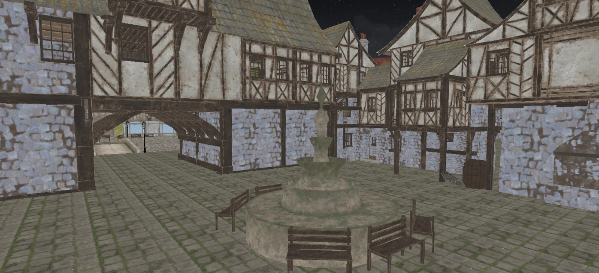

작은 광장Small square
- 장소 목적Purpose
- 일상적인 공간에서 시작해 긴장을 풀어 준다.The route opens in a familiar square where the viewer can relax.
- 동선 유도Wayfinding
- 사방이 막힌 광장에서 하늘은 보이게 하고, 유일한 출구에 조명을 두어 발길을 이끈다.The sky is visible above the enclosed square. A light marks the only way out.
- 연출 목적Staging
- 다음 공간과 대비되도록 어둡고 좁게 설계했다.The square is dark and narrow in preparation for the open space ahead.